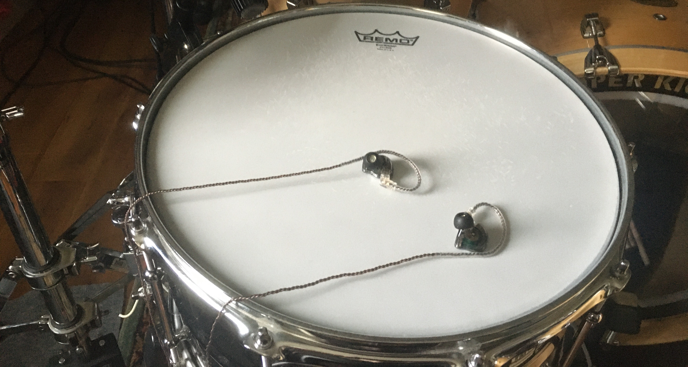
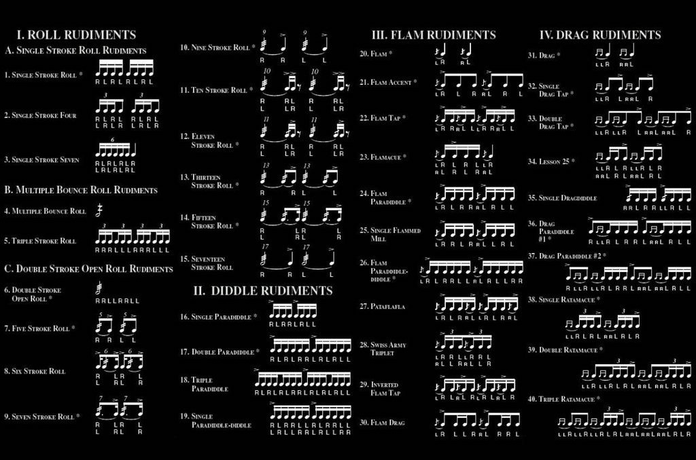
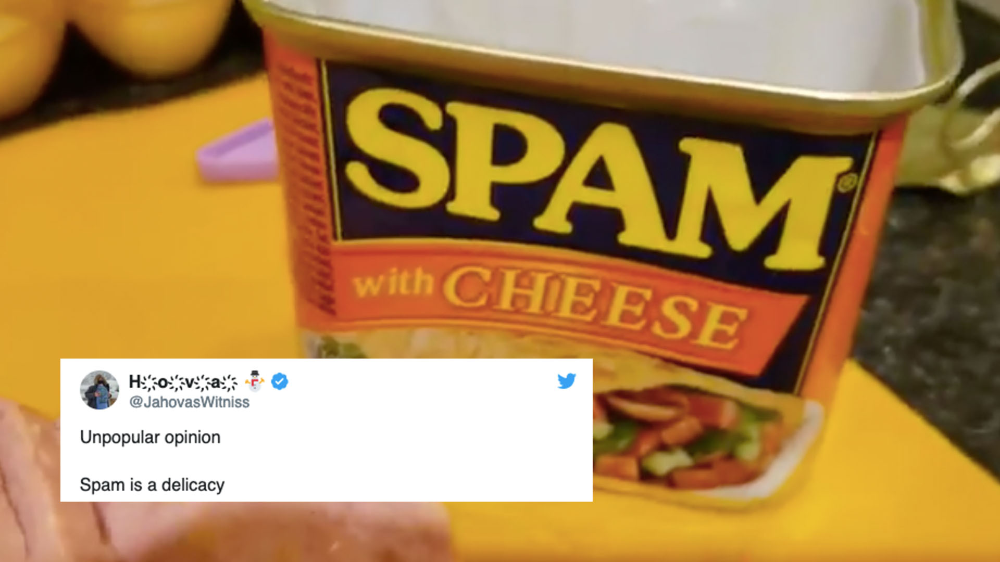
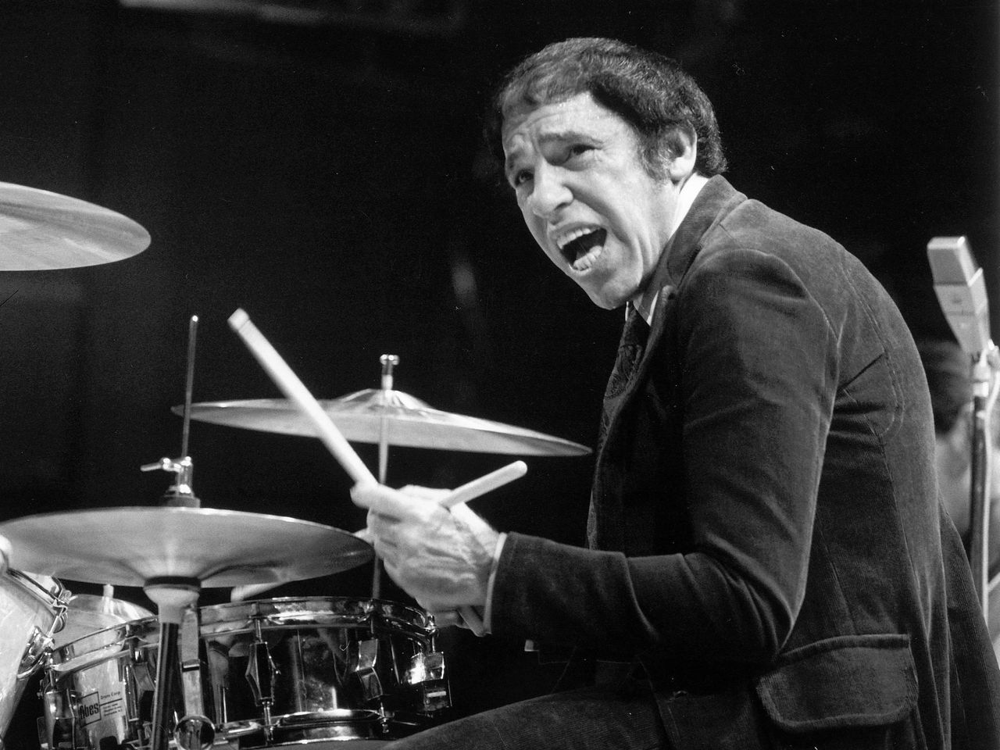
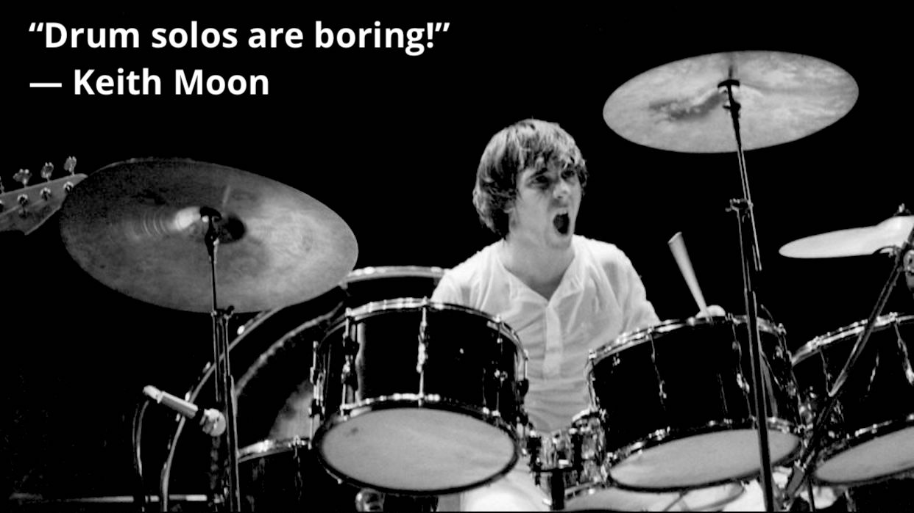
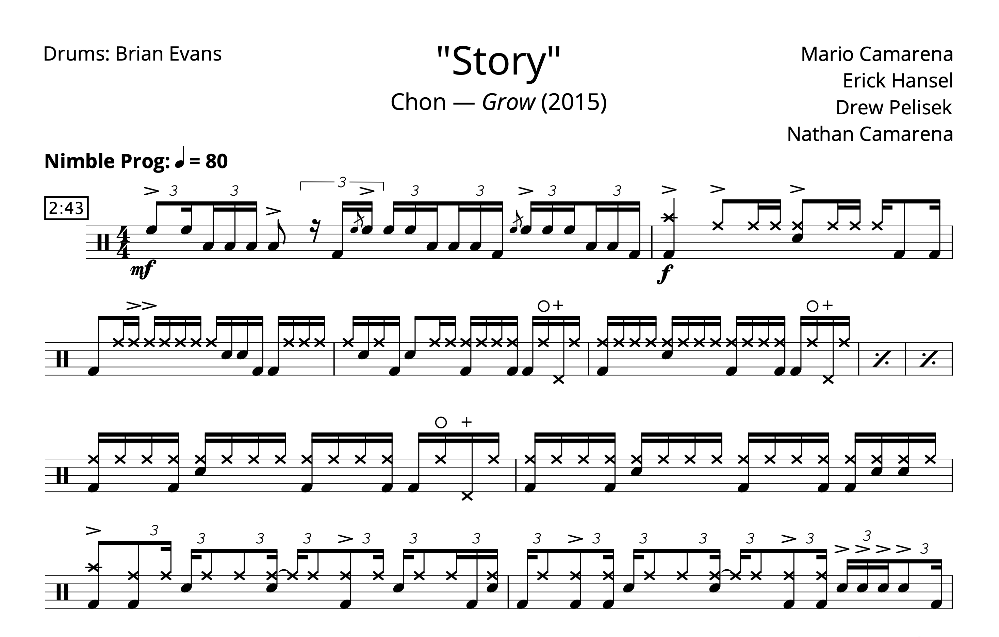

Tagged: Rant & Raves
First EP — Lessons Learned
Posted on May 30, 2021
Sorry for my recent unannounced absence — I missed last week’s post after receiving an inoculation last Wednesday that promptly knocked me on my butt for a few days. Once I got over that, it was crunch time for my band’s EP. The last step we had to take was artwork, which ended up falling to me. And with the prospect of pushing this release back again, I had to cook something up in a timely manner.
But now I can announce that the Natural Born Killer EP has been sent to our distributor, and is on its way to streaming services. At long last, the nightmare is over… on to the next one! After two years on this project, I want to write a bit about the process, since this is the first studio project that I (and my bandmates) we ever a part of, and… we really did a lot of things wrong. So let’s go through it all. Read More . . .
An Honest Look at the Rudiments
Posted on May 16, 2021
Earlier this week, someone posted on r/drumming asking about the rudiments. I chimed in on the thread but I feel like expanding on my thoughts more here, since I have yet to talk at length about the rudiments (and there’s a lot to talk about). The OP was specifically asking about what is and isn’t a rudiment (i.e. why is this lick a rudiment, but not that one). Read More . . .
This Week in Boulder
Posted on March 24, 2021
So Monday night I was getting ready to watch CU play Florida State in the round of 32, when my excitement was derailed by news of a shooting that happened hours earlier in Boulder. Some jerkoff went to a King Soopers and killed ten people (including a police officer) before being arrested and hauled off to a hospital.
It’s a bit chilling for me, since I used to go to that store all the time. Read More . . .
Unpopular Opinions
Posted on February 7, 2021
So, a few weeks ago, someone on r/drums started a thread basically asking about unpopular drum opinions. I couldn’t help myself, and I left quite a lengthy comment, since I find myself disagreeing with most of what happens on the internet with regards to drumming.
My comment ended up being at the top of the thread, becoming the most popular thing I’ve ever done on the site, with a whopping 29 upvotes. Read More . . .
Wrapping Up 2020
Posted on January 1, 2021

Now that the new year is upon us, it’s time to wrap up the last 12 godforsaken months. I can’t say I have very high hopes for 2021, but in the meantime, I guess I should take some inventory.
For one, I graduated college this past May. At long last, I officially have one major, two minors, and a certificate to my name. It was a bummer I didn’t any sort of commencement (not like I really cared), but hey, now I have a diploma. Read More . . .
Rant: Thoughts on Buddy Rich
Posted on December 20, 2020
When I took my deep dive into the ’89 Buddy Rich Memorial Concert, I had to watch most of it on YouTube before I got my hands on my own copy (which is much too difficult — shame on you Alfred!). Of course, I often wandered into the comments section on these videos, and amongst all the praise for these great drummers I started noticing comments that were… a little dismissive. Read More . . .
Rant: Drum Solos
Posted on December 13, 2020
So it’s time to distill my thoughts from the Memorial Concert posts. The first thing I want to talk about concerns drum solos, since I originally wanted to share a solo from each drummer. I had to can an audible partway through this project, when I realized that notating six solos was not gonna happen. Read More . . .
Transcription: “Story” — Brian Evans with Chon + A rant about music theory
Posted on October 4, 2020
This has been kicking around in my drafts folder for almost exactly one year — I guess now is as good of a time as any to share it with the world. So, last October I saw a post over on r/Drums where somebody asked about the Chon track “Story” off of their 2015 debut. The poster was asking about what was going on at the end of the tune, around the 3:10 mark. Read More . . .